说明：名单库因子使用手册
1.背景
Zeus与名单库的联动
-
在名单库联动的诉求中，主要分为策略查询名单库和策略写入名单库。首先要有一个名单库存储服务，再此基础上与引擎进行联动，查询服务通过因子（名单库因子）、写入服务通过决策（携带附加信息的决策）实现最终的联动；
-
常用的特征逻辑封装
名单库因子：与名单库联动过程中将查询名单的逻辑进行封装；
2.操作说明
2.1 先在skywalker上创建名单库
2.1.1 入口
Skywalker-数据产品-风控名单库-名单库管理-名单
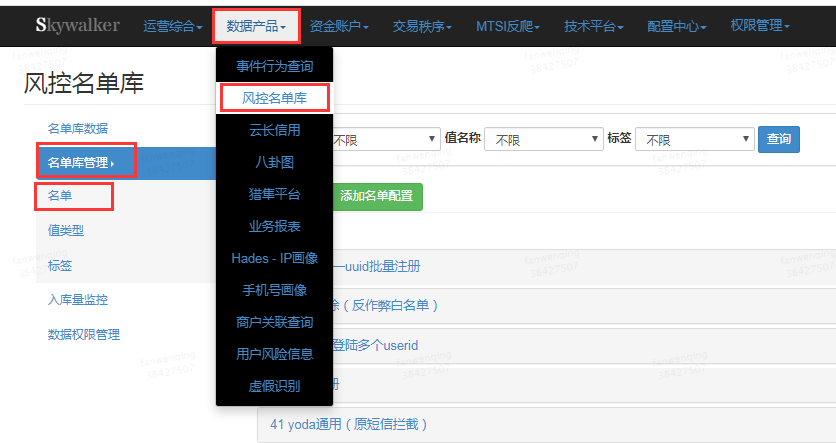
2.1.2 创建名单
点击 新建名单，填写 名单名称 和 名单说明，点击 保存 即可；
|
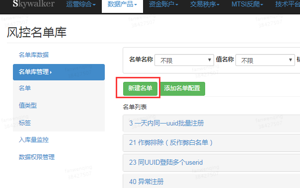 |
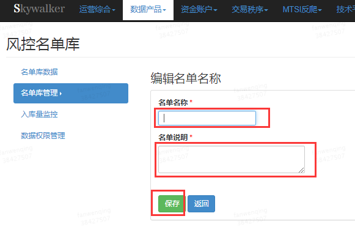 |
2.1.3 添加名单配置
（1）点击 添加名单配置，填写名单配置信息；
- 名单名称：选择上一步创建的名单库或已有名单库；
- 值类型：根据不同的场景和规则选择相应的值类型；
- 名单类型：根据需求可选黑名单/白名单/灰名单；
- 风险等级：依据风险程度选择风险等级；
- 备注：可以描述该名单的用法，方便复用；
- 风控业务标签：根据需求选择；
- 业务方标签：根据具体业务方进行选择；
- 名单分类标签：根据相应规则或场景进行选择；
- 点击继续添加可以同时添加多条名单配置；
|
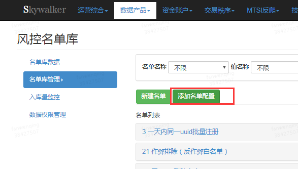 |
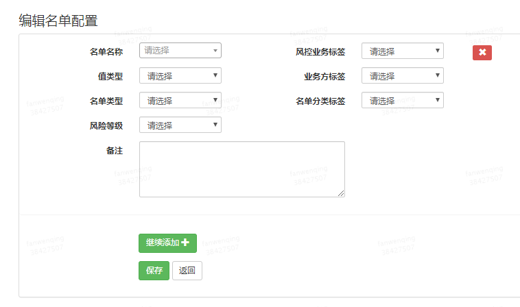 |
（2）建完名单库并配置好后可以查询到相应的记录：
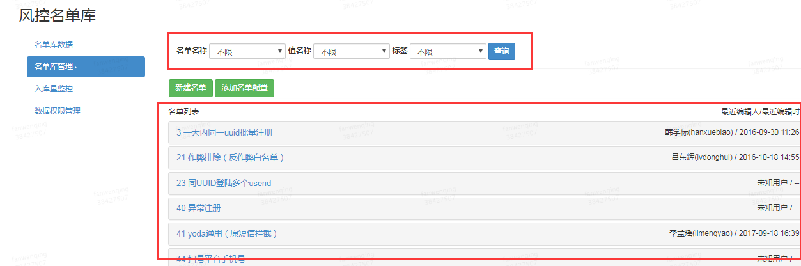
2.2 然后在Zeus上创建名单库因子
2.2.1 入口
规则->因子->添加因子
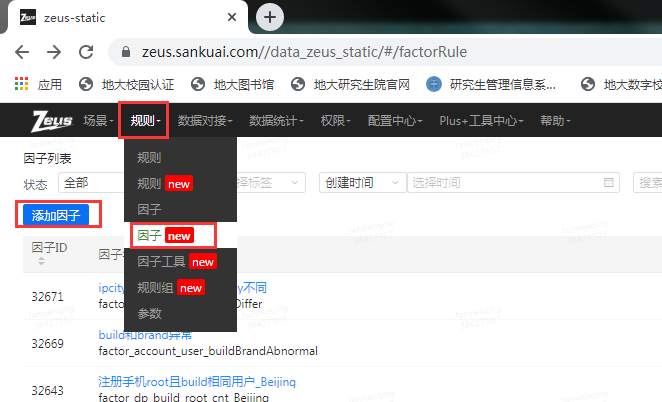
2.2.2 填写名单库因子逻辑信息
（1）选择工具->扩展因子->拓展类型->名单库因子
|
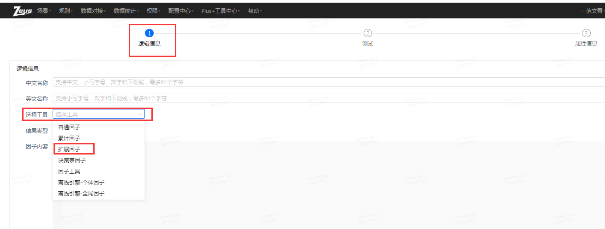 |
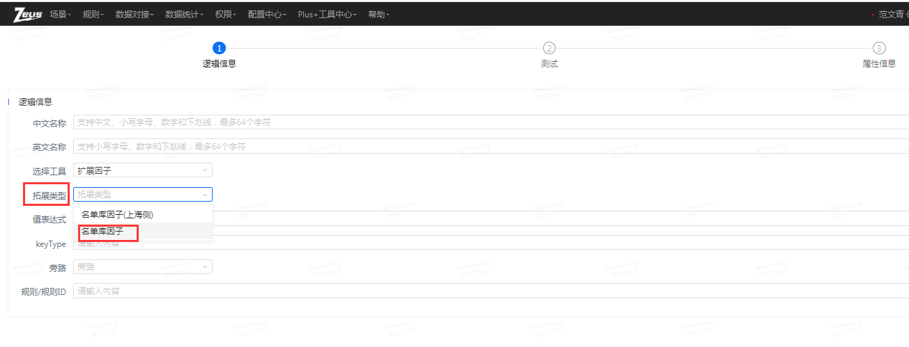 |
（2）填写名单库因子的其他逻辑信息，红框部分（名单类型、风险类型、值类型、风险等级）必须与创建名单库的时候完全一致；填写完成后，点击 下一步；
- 中文名称：名单库因子的中文解释，方便后续理解和查询；
- 英文名称：名单库因子英文名（依据命名规则命名，例如账户安全人员在创建中的命名规则是：factor_account_user_场景_业务方需求_值类型，例如“酒店注册场景下反爬黑名单注册拦截”对应“factor_account_user_register_hotelMTSIAccount_mobile”；）
- 值表达式：aviator表达式，此处为与名单库的值类型取匹配的参数（账户安全人员在创建过程中举例：例如名单库的值类型为userid那此处也应为userid；但此处有坑，注册场景下手机号的值表达式不为mobile，为user，因为注册场景下业务方传的参数是user而非mobile）；
- 名单类型：选对应名单库的名单类型；
- 风险类型：选对应名单库；
- 值类型：选对应名单库的值类型；
- 风险等级：选对应名单库的风险等级；
- 过期时间：可选，按需求填写；
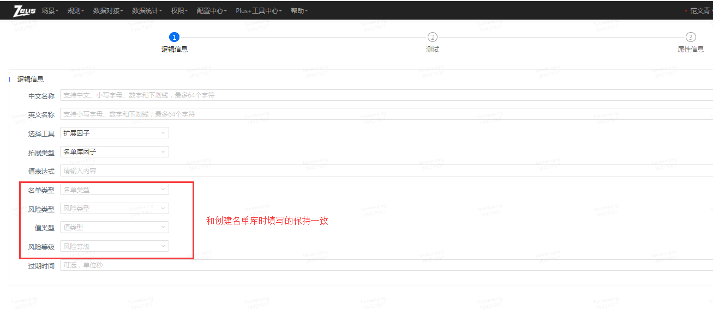
2.2.3 为创建的名单库因子添加测试用例
填写测试信息之后点击 添加测试用例，测试成功后，点击 下一步；
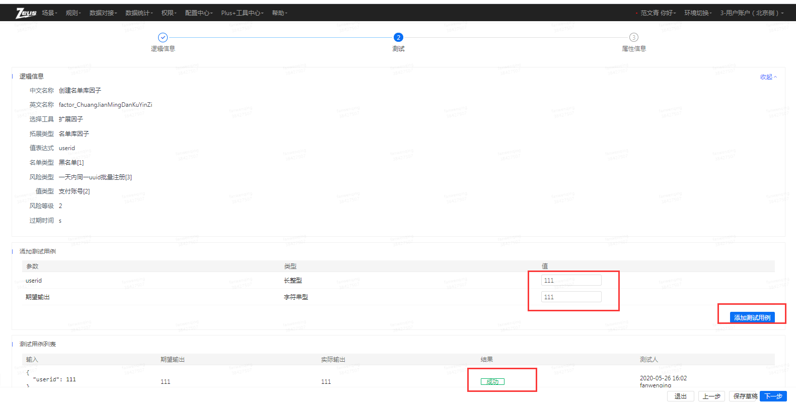
2.2.4 填写名单库因子的属性信息
按照需要选择共享给的业务方并为该名单库因子添加标签，点击 完成 ，至此，名单库因子创建完成；
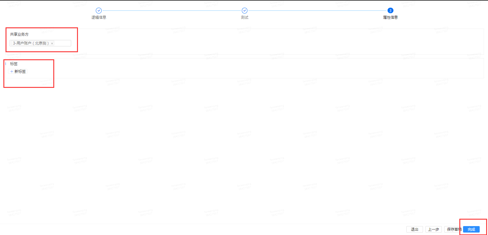